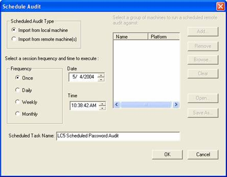

Using LC5For security reasons, operating systems do not store passwords in their original clear-text format. The actual passwords are encrypted into a hashed form, because they are sensitive information that can be used to impersonate users, including the operating system administrator. The original password cannot be derived directly from a hashed password, and LC5 operates similar to a hacker to discover the password by automated guessing. LC5's automated guessing process illustrates the difficulty in password cracking. LC5 obtains password hashes from the operating system, and then begins hashing possible password values. The password is discovered when there is a match between a target hash and a computed hash. LC5 must first obtain password hashes from the target system, and then uses various cracking methods to retrieve the passwords. Obtaining the Password HashesApproaches to obtaining password hashes differ, depending on where the password resides on the computer, and your ability to access them. LC5 can obtain password hashes directly from remote machines, from the local file system, from backup tapes and repair disks, from Active Directory, or by recovering them as they traverse the network. Obtaining passwords over the network requires network and administrator privileges, as detailed below. · Import From Local Machine NOTE: LC5 is limited to dumping and opening 65,000 users. Audits with than 10,000 users require longer audit sessions. · Import from Remote Machine To
import remote machines to the audit list, use the Import dialog box
from the Session menu, and click on Remote Machine. Use the Add
and Browse buttons to add the remote machines. Retrieving password
files from remote machines requires administrative access.
To save the audited group of remote machines, click Save As in the Import dialog box. Click Open from within the Import dialog box to retrieve a stored group. LC5 audits Unix password files from within the same interface. You are required to have an account on the remote Unix machine with access to the shadow file to perform this type of audit. @stake recommends creating an auditing account on the remote machine to be used only by LC5. Passwords can be obtained remotely from both Windows and Unix machines, and contained in a single session. If they are both in a single session, auditing order is as follows:
Note: This approach does not obtain password hashes from most Windows 2000 and Windows XP systems, as Windows 2000 and XP use SYSKEY by default. SYSKEY hashes cannot be found using a password cracker, due to the strong encryption Windows 2000 and XP use.
Windows NT Service Pack 3 introduced SYSKEY, which is turned off by default. SAM access works on Windows NT systems, unless SYSKEY is explicitly turned on. SYSKEY provides an additional layer of encryption to stored password hashes, however, you cannot tell by looking at the SAM or at password hashes it contains whether they have been encrypted with SYSKEY or not. LC5 cannot crack SYSKEY-encrypted password hashes. If you do not have access to at least one administrator account on a Windows 2000 machine, you cannot obtain the password hashes required to run LC5. In such cases, you may benefit from a password reset utility.
Password hashes cannot be read from the file system while the operating system is running, since the operating system holds a lock on the SAM file where the password hashes are stored. Copy the SAM file by booting another operating system such as DOS (running NTFSDOS), or Linux (with NTFS file system support) and retrieving it from the target system, where it is typically stored in C:\WinNT\system32\config . This is especially useful if you have physical access to the machine and it has a floppy drive. You may also retrieve a SAM from a Windows NT Emergency Repair Disk, a repair directory on the system hard drive, or from a backup tape. Windows 2000 does not normally store a SAM file on the repair disks it generates. Load the password hashes from a "SAM" or "SAM._" file into LC5 using the Import dialog. Select to Import from file, From SAM File and specify the filename. LC5 will automatically expand compressed "SAM._" files on NT.
LC5 can capture the encrypted hashes from the challenge/response exchanged when one machine authenticates to another over the network. Your machine must have one or more Ethernet devices to access the network. From the Session menu, select Import From Sniffer. If more than one network interface is detected, the Select Network Interface dialog box allows you to choose the interface to sniff on. After choosing your interface, the SMB Packet Capture Output dialog box appears to capture any SMB authentication sessions that your network device can capture. Switched network connections only allow you to see sessions originating from your machine or connecting to your machine. NOTE: If you have a previous version of LC installed on your machine, you must remove the NDIS packet driver from the Protocols tab in the Network Control Panel. Other low level packet drivers that are known to cause problems are the Asmodeus and ISS packet drivers. These need to be removed as well. As SMB session authentications are captured, they are displayed in the SMB Packet Capture Output window. The display shows:
The capture can be imported at any time using the Import button. You can capture and crack other passwords at the same time; however, password hashes captured after initiating an audit are not attempted in the running audit. Note: LC5's packet capture works on Ethernet adapters only, and may fail if a firewall is running on the same machine as LC5. It will not function reliably on a PPP connection. Cracking the Password HashesThe cracking processes that generates password values provides several options that balance audit rigor against the time required to crack. Effective auditing, therefore, requires an understanding the underlying business goals, and the security thresholds necessary to meet them. To configure the cracking methods for your session, choose Session Options under the Session menu or click the Session Options button on the toolbar to open the Auditing Options For This Session dialog box. The options for this dialog box are detailed below. The UserName CrackLC5 first checks to see if any accounts have used the username as a password. These are weak passwords that you need to know about right away. This crack is performed first in every audit, because it is very quick. Dictionary CrackThe fastest method for retrieving simple passwords is a dictionary crack. LC5 tests all the words in a dictionary or word file against the password hashes. Once LC5 finds a correct password, the result is displayed. The dictionary crack tries words up to the 14 character length limit (set by Windows NT, but not Windows 2000). LC5 uses the 25,000-word dictionary file, words-english.dic, which contains the most common English words. LC5 also ships a 250,000 dictionary, words-english-big.dic, which can be used for more comprehensive dictionary audits. LC5 loads this file or any other word file you select based on settings in the Session Options dialog. LC5 displays the result of passwords of any length located in the dictionary. The cracking process for non-dictionary words analyzes the first and last seven characters of a possible password, independently. For example, if the first seven characters of a password match those of a word in the dictionary, LC5 reports these, even if subsequent characters do not match those in the dictionary word. Likewise, if the eighth character through the end of the word matches the corresponding characters in any dictionary word, LC5 identifies those. When one half of a password is cracked, but the other is not, question marks (i.e. ???????) fill the un-cracked half. If neither half is cracked, the results in LC5 are left blank. The table below illustrates
partial results LC5 returns when one part of a password matches a dictionary
word and the other does not. Consider the following passwords and their
results in a Dictionary crack: |
||||||||||||||||||
|
||||||||||||||||||
|
Hybrid CrackA Hybrid Crack builds upon the dictionary method (and its results display in the Dictionary Status area) by modifying existing dictionary words to generate additional password attempts. Many users choose passwords such as "bogus1!", or "1!bogus" in an attempt to create a memorable, yet harder to crack password, based on dictionary words slightly modified with additional numbers and symbols. Another common password substitutes numbers and symbols for letters, such as 3 for E, or $ for S. These types of passwords pass through many password filters and policies, yet still pose organizational vulnerability because they can easily be cracked. LC5 cracks these passwords in much less time than it takes for a brute force attack. LC5's Hybrid mode checks for number or symbol characters prepended/appended to each word in the dictionary file you have selected. The default setting is 0 prepend and 2 append. Character substitutions are also turned off by default. Note: Selecting 3 or more characters to either setting requires a longer audit for the Hybrid crack. Using a dictionary larger than the one LC5 uses by default, or if too many characters are set, the audit may take longer to complete. These features may require significantly longer audits, however, it may still be faster than a full brute force audit. If audit time is a priority, run the hybrid mode twice: once with append/prepend characters turned on and character substitutions turned off, and again with append/prepend turned off and character substitutions turned on. This does not check as many possibilities, but audits are faster. Pre-Computed Password AuditsThe use of pre-computed password hashes allows password audits to be completed within a few minutes, instead of hours or days. And because hashes only have to be computed once, this allows the use of more complex character sets. Versions of LC5 that include precomputed hashes come with a set of hash tables for the Alphanumeric character set. Select the Precomputed Enabled checkbox to turn on pre-computed mode. Click the Hash File List button to select the desired precomputed files from the dialog box. Precomputed mode is now enabled, and will be used against all Windows user accounts. When Should I Use A Pre-Computed Audit?Pre-computed password tables include trillions of password hashes that have been computed in advance of the password auditing and recovery process. The key advantage of these tables is the reduction in time required to recover an individual password. During audit and recovery, each account hash is looked up against the hashes in the pre-computed table. A matching hash means the password has been recovered. This process can reduce recovery time by a significant amount; a single account can take hours in a brute force attack, but only seconds using the pre-computed password tables. However, the time savings using pre-computed tables is reduced as the number of accounts audited or recovered increases. It is recommended that the pre-computed tables be used for recovery of fewer than 2,500 accounts. For larger numbers of accounts, brute force analysis is preferable. Brute Force CrackThe most comprehensive cracking method is the brute force method, which recovers passwords up to 14 characters (Windows NT's password length limit). The brute force crack attempts every combination of characters it is configured to use. Your choice of character sets determines how long the brute force crack takes. Common passwords, based on letters and numbers can typically be recovered in about a day using the default character set A-Z and 0-9. Complex passwords, on the other hand, that use characters such as #_}* could take up to hundreds of days to crack on the same machine. NTLM, DES, and MD5 passwords are case-sensitive, and LC5 tries both upper and lower case characters. The difference between the strengths of weak versus strong passwords demonstrates the value of strong passwords in protecting your organization or machine. Using a real-world password auditing tool helps discover the strength of passwords in your organization, and gauge policy decisions such as:
Audit Method and PerformanceLC5 can audit six different types of password hashes to recover a password:
The auditing options are determined by the on the hashes a user imports. Performance varies between these different approaches. If you retrieve user account passwords from a registry, SAM, or Active Directory, you can audit either the LM or the NTLM password hashes. Audit performance in these cases degrades only slightly as the number of hashes increases. Because of its structural weaknesses, the LM hash is the easiest and fastest to audit. LC5 defaults to auditing the LM hash unless the user accounts you import lack LM hashes or have LM hashes that correspond to an empty password. Since the LM audit only retrieves passwords in case-insensitive form, a very brief NTLM analysis is performed on any password found with the LM audit in order to determine the proper upper or lower case status of its characters. However, this is much less time consuming than the full NTLM audit described below. The NTLM audit requires more time, because the NTLM hash is based on a stronger algorithm and is case sensitive, expanding the possibilities that must be attempted to recover a password. Where do accounts with empty passwords come from? Machine accounts that cannot be used for login have dollar signs in their user names. User accounts that last had their password changed under MacOS, Novell, or WinFrame (which do not support NTLM hashes) will have empty NTLM passwords. Others are simply accounts that were created, but never assigned a password. Note: Windows 2000 passwords longer than 14 characters have *empty* LM passwords, because the LM hash does not support passwords of this length. Auditing the challenge/response pairs captured from network sniffing can take longer because each password hash is encrypted with a unique challenge. As a result, work performed cracking one password cannot be used again to crack another. In addition to the considerations mentioned above, the time-to-completion increases as you add sniffed password hashes to crack. Ten network challenge/response hashes take 10 times longer to crack than just one. Therefore, this type of cracking should be targeted toward particular passwords to be effective. The DES operations that LC5 uses are CPU-intensive, not memory-intensive. Increasing the quantity and processor speed has the greatest impact on improving LC5's performance. Extra memory has very little impact. You can boost the performance of an LC5 audit by increasing the priority of the process if the local machine is not performing other applications. To increase process priority:
Raising the priority boosts LC5's performance at the expense of other running applications. Choosing the highest priority (Realtime) is not advised with LC5, as this can effectively lock up the operating system. Beginning Your AuditOnce your audit is configured in the Session Options, LC5 is ready to perform the audit. Click the Begin Audit button on the toolbar to start your audit. During the audit, status information on the right hand size of the LC5 interface shows the progress of the audit. During dictionary and hybrid audits, the number of dictionary words tried is displayed along with the percentage complete. During the brute force attack, the number of passwords attempted each second under is shown as keyrate. Session OptionsYou can modify your Session Options for each Audit from the by clicking Session Options under the Session menu. The following options are available: ·
Dictionary Crack ·
Dictionary/Brute
Hybrid Crack ·
Precomputed ·
Brute Force
Crack Scheduling Password AuditsAdministrators can schedule audits scans daily, weekly, monthly, or just once. To schedule an audit, select Schedule Audit from the Schedule menu. A dialog box displays a number of options, including the location of hashes, and the frequency of the audits. Click OK when done. The scheduled audit uses the current session options. Double-check the options before scheduling audits. Choose a descriptive Schedule Name, if there are multiple scheduled audits. The recommended naming scheme includes where the hashes come from, the audit type, and frequency. For example, an audit that pulls the password hashes from a local machine called ABC and performs a daily dictionary audit might be named:
Select View Scheduled Tasks from the Schedule menu to view all of the scheduled events. To remove events from the scheduler, click them and press delete. Scheduled audits are only supported on Windows 2000 and later.  Remediating Poor PasswordsLC5 adds the ability to take action on audited accounts. User accounts can be disabled within LC5, or forced to change their password on the next login. Click on the user account you wish to remediate. Select Disable Account(s) or Force Password Change from the Remediate menu to take the appropriate action. Multiple accounts can be selected by holding down the shift or control keys while clicking. After an audit is completed, the following options are available in the Remediate menu:
Use the Disable Account or Force Password Change options on the selected actions for appropriate action. ReportingLC5 reports include:
While the audit is taking place, the reporting tab offers a snapshot of the audit results in realtime. The reporting tab contains charts and graphs that help quickly identify the security profile of the user accounts. Reports include:
Upon completion of the audit, results can be exported by selecting Export->Session, from the File menu. Results are exported in tab-delimited format to load into a spreadsheet format. LC5 exports columns that are visible for the current session. |